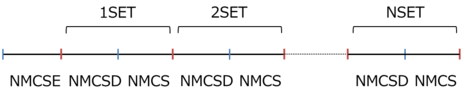
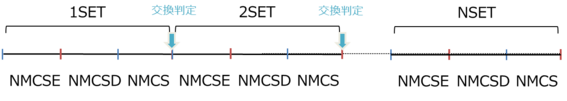

DSQSSは、複数のプログラムからなるパッケージです。入力準備プログラム hamgen_H , dla_alg , lattgene と、向き付きループアルゴリズムを採用した量子モンテカルロプログラム dla 、結果解析ツール merge.pl から構成されています。それぞれの概要、実行方法は以下の通りです。
ハミルトニアン定義ファイルを生成するためのプログラムです。 次の3種類のパラメータを入力値とし、ハミルトニアン定義ファイル hamiltonian.xml を生成します。
M [int]
The number of bosons on each site. ( M=1,2,3 ... for S=1/2,1,3/2 ... )
J [double]
The coupling constant (positive for ferromagnets)
F [double]
The magnetic field in the pair Hamiltonian. ( = H/z if the field H is shared equally by all pairs, where z = 2 for a ring geometry. )
$ $INSTALL_DIR/bin/hamgen_H M J F
#hamiltonian.xmlが生成されます。
アルゴリズム定義ファイルを生成するためのプログラムです。
hamgen_Hで生成されたhamiltonian.xmlを入力とし、アルゴリズム定義ファイル algorithm.xml を生成します。
$ $INSTALL_DIR/bin/dla_alg
#algorithm.xmlが生成されます。
格子定義ファイルを生成するためのプログラムです。 次の3種類のパラメータを入力値とし、格子生成ファイル lattice.xml を生成します。
D [int]
The number of dimension
L [int]
The liner size of the lattice ( L,L0,L1 ..., must be even number.)
B [double]
The inverse tempereture.
$ $INSTALL_DIR/bin/lattgene D L B
#lattice.xmlが生成されます。
多次元の場合は、次のように各方向で異なる格子数を指定することが可能です。
$ $INSTALL_DIR/bin/lattgene 2 4 6 1.2
#4×6の二次元格子、逆温度1.2のlattice.xmlが生成されます。
# "lattgene 2 4 1.2"と格子数を省略した場合は、4×4となります。
dla
dlaは、向き付きワームアルゴリズムを採用した量子モンテカルロプログラムです。エネルギー、比熱など、様々な物理量を求めることができます。アルゴリズム定義ファイル、格子定義ファイル、計算制御ファイル(書式詳細は後述)を入力とし、計算結果ファイルを生成します。
また、dlaはMPI並列化されており、異なる初期乱数での並列計算が可能です。計算結果は、 [出力ファイル名.ランク番号] に出力されます。
dsqss-1.1は磁場、逆温度によるレプリカ交換法を用いた拡張アンサンブル計算にも対応しています。計算方法の詳細は、 計算例 を参照してください。
[single] $ $INSTALL_DIR/bin/dla qmc.inp #結果出力ファイルが生成されます。 [parallel] $ mpirun -np n $INSTALL_DIR/bin/dla qmc.inp #プロセス毎の結果出力ファイルが生成されます。 #ex) qmc.log.000, qmc.log.001
merge.pl
merge.plは計算結果を解析するツールです。各物理量の平均値、統計誤差等を求めることができます。 複数ある [計算結果ファイル名.ランク番号] の [計算結果ファイル名] を引数として与えます。
$ tool/merge.pl qmc.log #複数のqmc.log.xxxをマージしたqmc.logが生成されます。
プログラムdlaは、計算を制御する入力ファイルを読み込みます。
入力データの規則
入力パラメータ
計算手法の選択。通常計算では”0”を与えます。
0: 通常計算
1: 磁場によるレプリカ交換計算
2: 温度によるレプリカ交換計算
( レプリカ交換による拡張アンサンブル計算の詳細については、 計算例 を参照してください。)
指定必須
ワーム発生数を求めるための試行計算用のモンテカルロ繰り返し回数
省略可、デフォルト値 nmcse=1000
物理量計算に関係しないモンテカルロ繰り返し回数
省略可、デフォルト値 nmcsd=1000
物理量計算をおこなうモンテカルロ繰り返し回数
省略可、デフォルト値 nmcs=1000
モンテカルロ繰り返し計算のセット数
実際の繰り返し回数は、nset* ( nmcsd + nmcs ) となる
レプリカ交換計算の時は、最大交換試行回数となる。
省略可、デフォルト値 nset=10
・モンテカルロ繰り返し回数
・Runtype=0の場合
・Runtype>0の場合(レプリカ交換)

乱数種番号
省略可、デフォルト値 seed=198212240
最大バーテックス数
省略可、デフォルト値 nvermax=10000
最大セグメント数
省略可、デフォルト値 nsegmax=10000
レプリカ数
runtype>0の時、省略不可
磁場の最小値
runtype=1の時、省略不可
各レプリカに割り振る磁場の間隔
runtype=1の時、省略不可
逆温度(1/T)の最小値
runtype=2の時、省略不可
各レプリカに割り振る逆温度の間隔
runtype=2の時、省略不可
アルゴリズム定義ファイル名
省略可、デフォルト値 algfile=”algorithm.xml”
格子定義ファイル名
省略可、デフォルト値 latfile=”lattice.xml”
計算結果ファイル名
省略可、デフォルト値 outfile=”qmc.log”
- サンプル 1：
- サンプル 2：
プログラムdlaは、計算結果を次に示すサンプルの書式で出力します。
各行の先頭文字列は、それぞれ”C”はコメント、”P”は入力次に設定したパラメータ、”R”は計算で求められた物理量、”I”はその他計算で得られた情報を表します。
出力パラメータ
物理量値、統計誤差の順で表示されます。
サンプル:
C This is DSQSS ver.1.1 P D = 1 P L = 4 P BETA = 0.1000000000000000 P NSET = 100 P NMCSE = 10 P NMCSD = 100 P NMCS = 500 P SEED = 198212240 P NSEGMAX = 10000 P NVERMAX = 10000 P NCYC = 3 P ALGFILE = algorithm.xml P LATFILE = lattice.xml P OUTFILE = qmc.log.000 R anv = 1.2600000000e-03 1.3228374768e-04 R ene = -8.7389634535e-02 2.6235724952e-03 R spe = 9.1045055233e-03 1.3488158010e-04 R len = 1.0483210915e-01 7.7857156133e-05 R xmx = 2.6208027288e-01 1.9464289033e-04 R amzu = 4.1600000000e-02 1.1751638613e-03 R bmzu = 4.1600000000e-02 1.1751638613e-03 R smzu = 2.6832000000e-01 1.4617258376e-03 R xmzu = 2.6832000000e-01 1.4617258376e-03 R amzs = -1.6000000000e-04 1.1371344456e-03 R bmzs = -1.1044073693e-04 1.1322290343e-03 R smzs = 2.3536000000e-01 1.2430834910e-03 R xmzs = 2.3497127399e-01 1.2410218249e-03 I [the maximum number of segments] = 13 I [the maximum number of vertices] = 9 I [the maximum number of reg. vertex info.] = 3